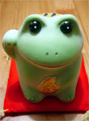
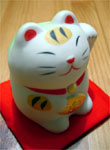
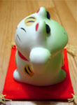
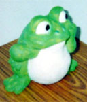
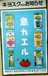
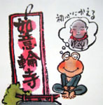
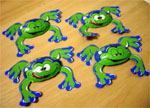
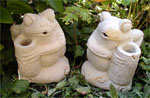

|
  まねきネコひっくりカエルと招きカエル！【神戸発=しげやん同志記者】「人を呼ぶ」「お金を呼ぶ」「厄除け・魔除け」。日本の家庭に一匹はすみついているであろう「招き猫」。でも、福や運を招くのは一度だけなんじゃないかと いう不安に駆られたことはないでしょうか。商店街の福引で缶ビール1箱が当たったり、ナンバーズで小銭を稼いだあと、我が家の招き猫を前に心に忍び寄るささやかな不安。「ああ、これで福を使い果たしちゃったのか…」。 そんな心配とは無縁なのが、今回、神戸中華街で発見したこの招き猫。いい事があったあとは、くるりと裏を向ければ、そのお姿はくりくり瞳で見つめるカエル様。これで「ああ、また福は私のもとに帰ってくるのだ」との思いを強くできるでしょう。先行きの不安感が募る新世紀の世相を明るくするために、日本古来の信仰「招き猫」と合体したカエル様。なんとすばらしいことではありませんかぁぁぁぁ。。
 珍品招きカエルに！ひえービックリ！【全国かえる奉賛会】まねきカエルは、町中にあふれているので、当たり前の置き物だとおもっていたら、なんと、今度は裏側がネコになった超珍品の『招きカエル』の発見の知らせが届きびっくりいたしましたああああああ。すごいぞー。招きカエルの裏に猫をつけるなんて、いったい誰が考えだしたんだあああああああ。
作るカエラーがまマロン！ 【日本発ガマまろん同志記者】私は、学生時代には、カエルの置き物ばかり作っておりました。この度、数年ぶりに、カエル作品を作りましたので、この場をお借りして公開させて頂くことになりました。この作品は、基本的にオリジナル作品です。カエル系のサイトは、今回の制作において、とても参考になりました。カエル・グッズを、１０００個以上は閲覧させて頂き、気に入ったカエル君のイメージを積み重ねました。 この作品の制作手順ですが、まず、オーブン陶土で原型を作りました。その原型を、シリコンで型取りして、石膏を流しました。その石膏作品に、低温で固まるカラーの粘土を表面につけて、色付けしました。私は、シリコンで型取りをしましたが、オーブン粘土だけでも、作品はお手軽に出来るので、皆さんも作ってみて下さい。 なお、同じ型ですが、作品は複数ありまして、色付けや表情をアレンジしてみる予定です。そのうち、新作のカエル氏も作って、自分のホームページを開設しようと思ってます。乞うご期待♪ 「集める」カエラーというよりは、「作る」カエラーの、ガマまろんです。素人の自称カエル職人ですが、今後ぼちぼち登場させて頂くかもしれませんので、これからもよろしくお願いします。
 キオスクのカエル自販機を発見！【千葉発順司様】千葉のキオスクで見つけました
【全国かえる奉賛会】キオスクで息さわやかになりませんか？そういう問い掛けとともに、自動販売機にカエルが描かれている。キオスクのお願いというからには、『息カエル』は素晴らしい商品に違いないぞ。しっかし、生き返るってことは、これを飲んだらいったんは死ぬというわけなのか。『生きカエル』ことができる素晴らしい薬剤の販売機らしいぞー。誰か買って飲んだ人の感想を待つ。

カエルサボテンの発売開始！【ケロ天市場】毎回発売と同時に売り切れてしまう、カエルサボテンの年末バージョンの生産が着々と進んでいます。なんでも、今回は、作者カワノナミさん本人のネームを冠した特別バージョンもあるよ。この時間に新聞みた人はラッキーだぞ。イマスグけろテン市場にいってみよーっ。しかも、全作品ともにカワノナミさん手製の、『かえるサボテン専用の手編みマフラー』付きらしいのであるーっ
なお、いつものように、唐突に発売することになるかもしんないので、カエル新聞をまめにチェックしてくださいねー
 如意輪寺がカエル寺宣言！【福岡発ぴのこ同志記者】かえる寺で知られる福岡県小郡市の如意輪寺が、パンフレットを作っていて、そこにはカエルがたくさん書いてあるばかりか、『シアワセカエルヨ カエル寺』と自ら『カエル寺宣言』を行っていたのです。全国のカエラーは、一生に一度は、カエル寺に詣でるために、働きましょう。 【全国かえる奉賛会】そうだあああああ。日頃から町内会や会社ごとに『カエル無尽講』を作り、一生を身を粉にして働いたなかなかわずかばかりのお金をためて、一生に一度、カエル寺に詣でるのが、われわれ庶民の夢なのであるーっ。如意輪寺の『カエル寺』宣言によって、全国カエラーの心のよりどころができたというものである。
来年の新年もカエル寺参りをするぞおおおおおおおっ！！
新型カエルチョコ発見！ 【福岡発けぃ様】カエルチョコを発見しました。これまでのカエルチョコは、カエル部分を直接だべたり、カエル部分の衣装をひきちぎる必要があり、カエラーの方々はもらっても、食べれない。という悩みがあったそうですが、このチョコは、カエル部分を丁寧にはがせば、カエルの銀紙が皮として残るので、残虐さがそれほどでもありません。
来年のバレンタインデーには、カエラー同志の義理チョコ交換に耐えられる仕様となっております。
 バリ島の石カエル９体を販売開始！【インドネシアバリ島発n.w.happy同志記者】☆いしや・ばびぐりん☆のn.w.happyです。先程当店のHPに、新しいカエルの石彫りがupしました。…といっても、9匹しかいないんですが。カエルの名前は、「花待ちカエル」です。
投稿採用者に武功カエル徽章を授与！ |

かえる古新聞過去に取り上げた記事を見出し付きで一覧したい人は、ここをクリック◆創刊号を見る◆先週号を見る◆話題の号を見る◆かえる新聞の昔を読む◆COOL NET FROG RANKING !
|
私も入っています。。全国かえる奉賛会
大王様に会うには、このバナーをクリック。ずっと奥に写真館があるぞ。全国かえる奉賛会に入会するには、自分のホームページのどこかに、下の部分を追加するとバナーがリンク付きで表示されるぞ。どんどん入会しましょー |


|